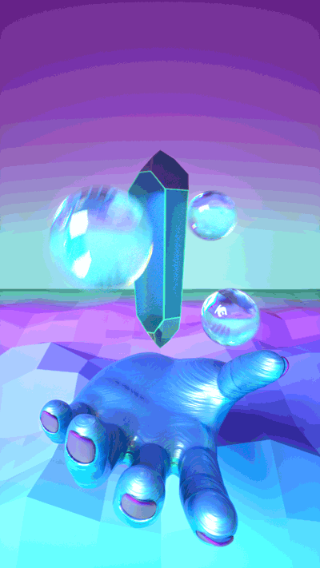
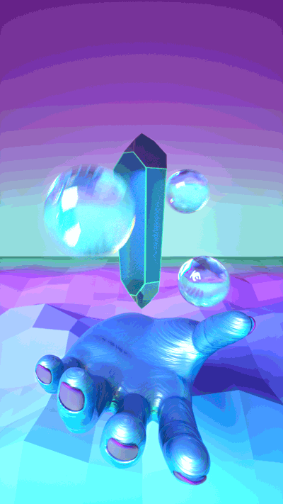
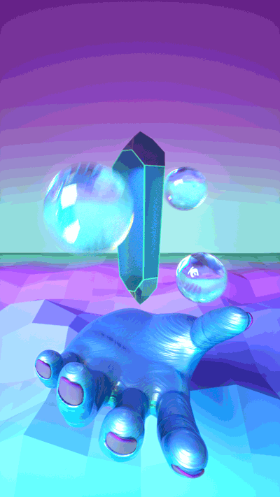
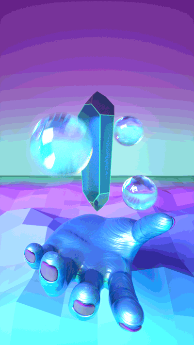

You approach the glow of the cave.
Brelin stands close to you but awaits by the entrance to look out for potential beasts.
You hear a voice and it echoes, "Human, you long to go back to where you are from?"
You answer back. The voice feels closer this time.
"I sense a full heart in you. You are beyond the liminality of this realm.
Here is the orb you seek."
A hand lingers in front of you. You take the orb.
"If you care to free your friend from their curse, give them one of the accompanying floating spheres.
As half human, they have the unique ability to cross between realms. However, if you go forth, you may no longer return to this land."
The voice disappears.
It is getting dark.
You and Brenil return to the tribe.